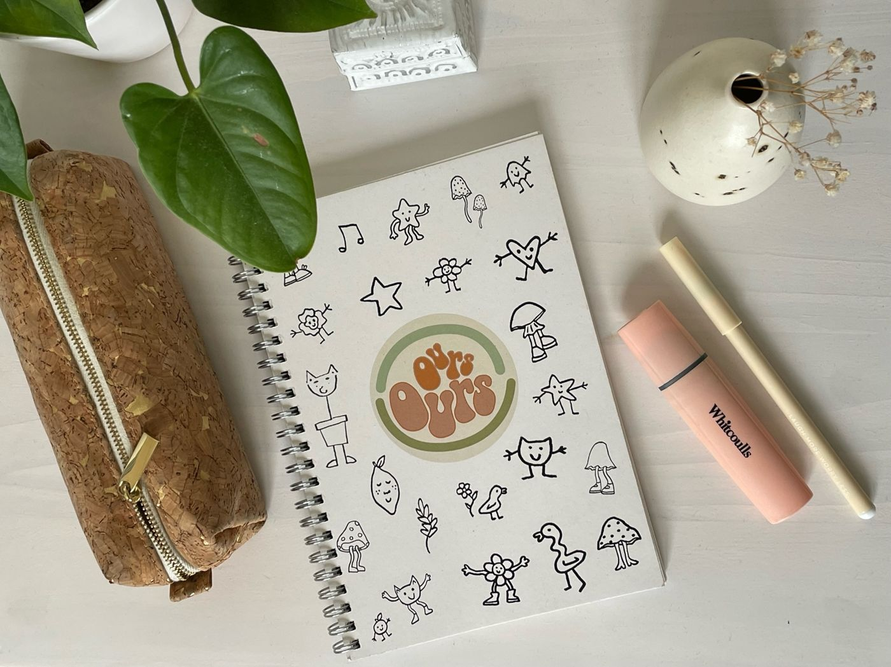
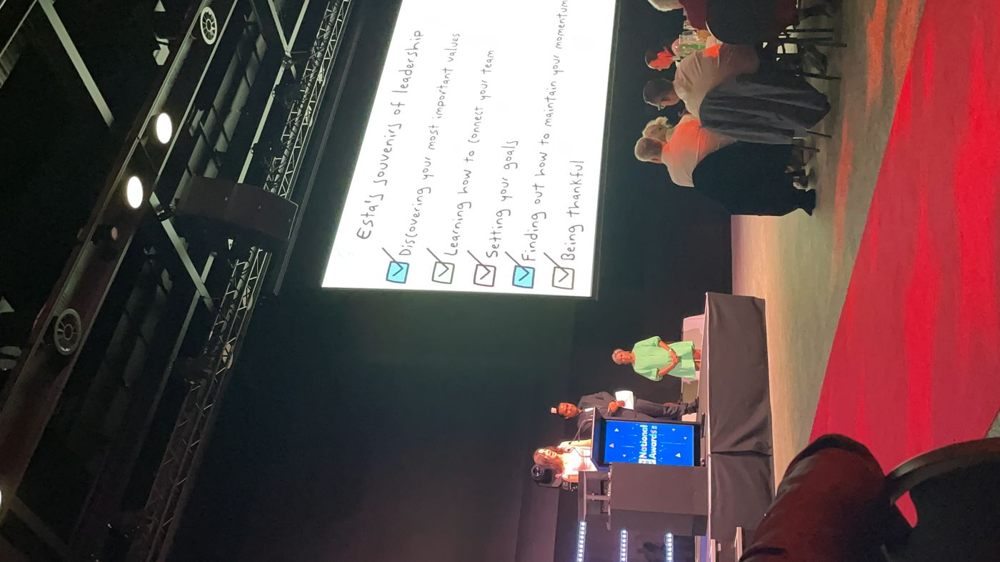
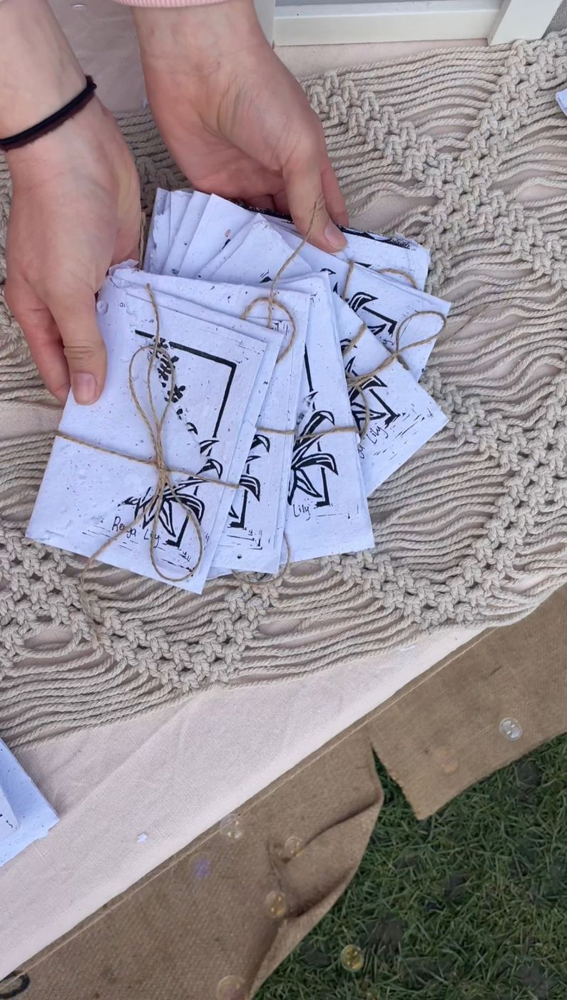
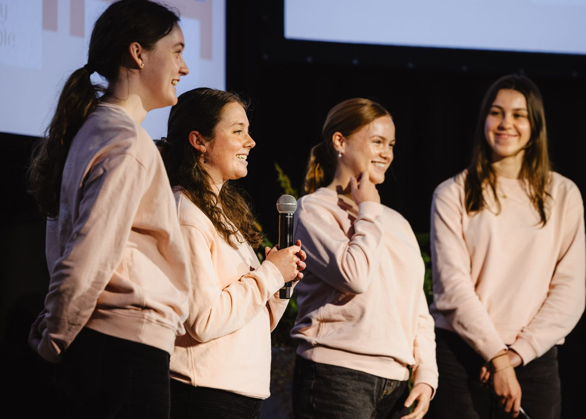

Young Enterprise Scheme
As a child Esta was always dreaming up business ideas so being involved in Young Enterprise in High School was a long awaited experience. Driven by sustainability Esta created two businesses with her team focused on solving paper waste in her school.
Ours NCEA Planners
As a busy gal in High School Esta and her team saw a gap for dedicated NCEA planners, made sustainably. After many hours on Adobe Esta designed the book and it was printed on recycled paper. The planner's were well loved by many as finally students could have a planner we could call 'Ours'.
Posie Papers
Driven to make a more direct impact on the school paper waste Esta and her team designed greeting cards made from recycled paper with native seeds embedded in the envelopes. The process of creating these cards had many prototypes, iterations and long days making paper but kickstarted Esta's love for the design process. The cards highlighted native flora and diverted paper from landfill. Esta was awarded 1st place of the regional awards and Esta was awarded national CEO of the year for her leadership.
Although Jodi wasn't a part of this team, she drew many of the pictures featured and involved in the ideation. This was planting the seed for our future of collaboration.



